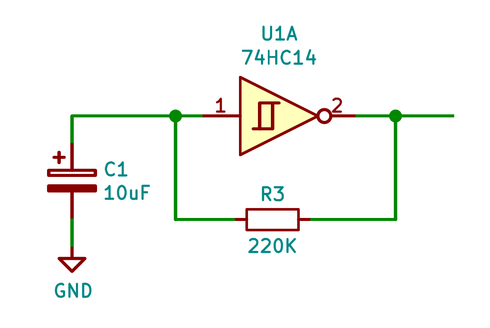
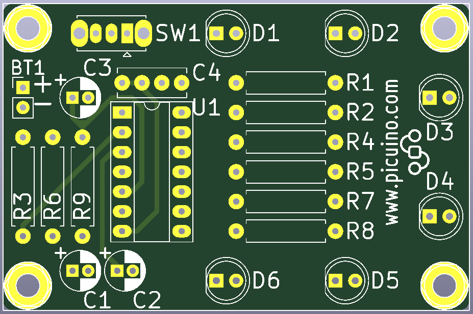
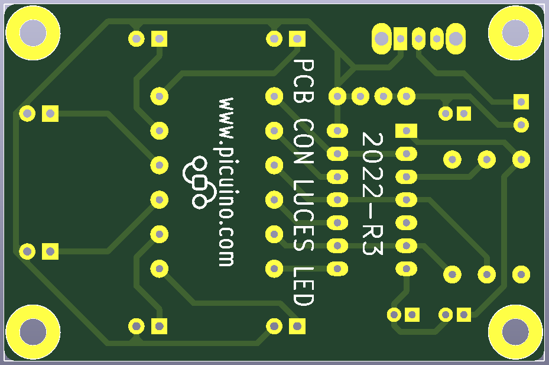
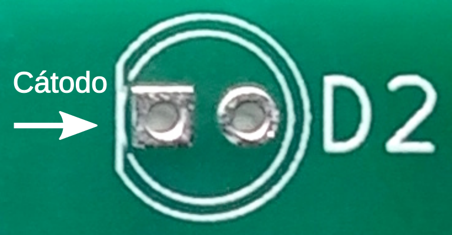
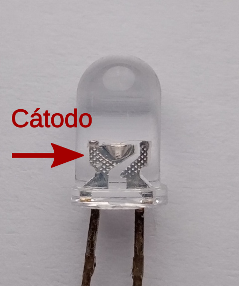

Circuito impreso con luces led¶
Diseño y montaje de un sencillo circuito impreso con 6 luces led parpadeantes.

Placa de circuito impreso ya montada. Formato JPG.
{kind=link}
{kind=link}
Funcionamiento del circuito oscilador¶
El circuito con luces que parpadean está basado en un oscilador que cambia su salida cada poco tiempo, encendiendo y apagando el led.
{kind=link}
Este circuito oscilador está formado por un inversor con trigger schmitt, un condensador C1 y una resistencia de realimentación R3.
El circuito inversor con trigger schmitt cambia su salida a diferentes tensiones de entrada. Este comportamiento se denomina histéresis de entrada y es el que permite que el circuito funcione como oscilador. En la siguiente gráfica podemos ver como cambia la tensión de salida del inversor para diferentes tensiones de entrada. Esta figura rectangular con dos líneas horizontales es la que tiene el inversor en su interior e indica que trabaja con histéresis.
{kind=link}
Cuando se enciende el circuito por primera vez, el condensador está descargado y por lo tanto su tensión en el terminal positivo vale cero voltios. El inversor schmitt tiene por lo tanto en su entrada cero voltios (un cero lógico) y en su salida los 5 voltios de alimentación positiva (un uno lógico). En esta situación, la resistencia de realimentación R3 va cargando poco a poco la tensión del condensador hasta que alcanza los 3,33 voltios, tensión a partir de la cual el inversor schmitt considera que la entrada vale un uno lógico y por lo tanto cambia su salida a cero voltios (cero lógico).
Ahora, la resistencia de realimentación R3 va descargando poco a poco la tensión del condensador hasta que alcanza 1,66 voltios, tensión a partir de la cual el inversor schmitt considera que la entrada vale un cero lógico y por lo tanto cambia su salida a cinco voltios (uno lógico) volviendo el ciclo a repetirse una y otra vez.
La velocidad de oscilación dependerá de los valores del condensador y de la resistencia. Cuanto mayores sean, más tiempo tardará en oscilar el circuito. La fórmula aproximada del tiempo de oscilación es:
Tiempo de oscilación = 0,8·R3·C1 = 0,8 · 220000 · 0,000010 = 1,76 segundos
El led D1 conectado a la salida del oscilador mediante una resistencia limitadora R1, se encenderá y apagará a la misma velocidad que el oscilador.
El led D2 conectado a la salida de otro inversor schmitt mediante una resistencia limitadora R2, se encenderá cuando D1 esté apagado y se apagará cuando D1 esté encendido, produciendo un parpadeo alternativo.
Este comportamiento se repite en los tres osciladores que tiene el circuito completo, a diferentes frecuencias dado que R3, R6 y R9 tienen diferentes valores y, por lo tanto, diferentes velocidades de parpadeo.
Circuito impreso (PCB)¶

Diseño del circuito eléctrico y del circuito impreso. Formato KiCad.
Archivos Gerber para la fabricación del circuito impreso. Formato ZIP.
Los archivos gerber sirven para solicitar la fabricación de la placa de circuito impreso a una empresa de fabricación de placas de circuito impreso como pueden ser JLCPCB o PCBWay.
En total hay un conjunto de 7 archivos gerber diferentes, tres archivos para la parte frontal, 3 archivos para la capa trasera y uno para los bordes de la placa. Además hay un archivo que indica dónde se deben realizar los taladros (drill).
Los archivos gerber y de taladrado se reparten como indica a continuación:
 
- Pistas de cobre de la capa frontal (F_Cu)
- Pistas de cobre de la capa trasera (B_Cu)
- Máscara de soldadura de la capa frontal (F_Mask)
- Máscara de soldadura de la capa trasera (B_Mask)
- Serigrafía de componentes de la parte frontal (F_SilkS)
- Serigrafía de componentes de la parte trasera (B_SilkS)
- Bordes para recortar la placa (Edge_Cuts)
- Archivo de taladros (.drl)
{kind=link}
{kind=link}
- Pistas de cobre:
- Son los conductores que conectan entre sí todos los componentes de la placa de circuito impreso. Aparecen en el dibujo con color amarillo (sin máscara de soldadura) o de color verde claro (ya cubiertos de máscara de soldadura).
- Máscara de soldadura:
- Es una capa de pintura, normalmente de color verde aunque puede tener otros colores, que sirve para proteger las pistas de cobre de la corrosión y para evitar cortocircuitos a la hora de realizar el proceso de soldadura. La máscara de soldadura no se aplica encima de los pads de soldadura.
- Serigrafía de componentes:
- Es una capa de pintura, generalmente de color blanco, que sirve para indicar el nombre de los componentes del circuito y para escribir indicaciones o dibujos. Esta capa de pintura se aplica con la técnica de la serigrafía y de ahí su nombre.
Listado de componentes (BOM)¶
El listado de componentes (llamado también BOM o Bill Of Materials) es un listado donde aparecen todos los componentes del circuito impreso con su cantidad y su referencia para poder obtenerlos antes de realizar el montaje.
La lista de componentes puede tener también la referencia de compra de un distribuidor de componentes electrónicos. En el siguiente documento se han añadido las referencias del distribuidor TME.
Listado de componentes de la placa con luces led. Formato PDF.
Listado de componentes de la placa con luces led. Formato ODS.
Orden y posición de montaje¶
A la hora de soldar los componentes conviene seguir un orden, de manera que se suelden primero los componentes más bajos y después los más altos. De esta forma, al dar la vuelta a la placa de circuito impreso, los componentes pueden apoyarse sobre la mesa y no quedarán despegados de la placa.
Además cada componente tiene una posición de soldadura. Si no respetamos esta posición corremos el riesgo de estropear el componente o hacer que no funcione el circuito.
El orden y posición de montaje son las siguientes:
1. Resistencias:
No necesitan ningún orden en particular para funcionar correctamente, pero el código de colores resulta más elegante y más sencillo de leer cuando todas las bandas de oro están alineadas a la derecha (resistencias horizontales) o hacia arriba (resistencias verticales) como en la imagen del inicio de esta unidad.
2. Interruptor de encendido SW1:
Habrá que montarlo de forma que la palanca del interruptor se sitúe fuera del circuito impreso para que resulte sencillo accionar el interruptor.
3. Zócalo del circuito integrado:
El zócalo tiene una pequeña pestaña en la parte superior que hay que alinear con la pestaña de la serigrafía de componentes, también en la parte superior del zócalo.
Si insertamos el circuito integrado en sentido incorrecto (hacia abajo) corremos el riesgo de estropearlo cuando circule corriente.
4. Condensadores:
Los condensadores electrolíticos tienen una banda blanca en uno de sus dos pines que indica el polo negativo del componente y que hay que montar en la zona también blanca de la serigrafía del circuito impreso.
Es muy importante que los condensadores estén correctamente montados porque si reciben tensión en sentido inverso se estropearán y también generan gas en su interior que puede llegar a hacer que exploten.
5. Diodos led:
Los diodos solo conducen en un sentido y no funcionan en sentido contrario. En la serigrafía de la placa de circuito impreso la patilla negativa o cátodo de los led siempre está mirando hacia la izquierda. Se distingue porque el círculo tiene un chaflán y porque el pad de soldadura es cuadrado.
A la hora de distinguir el cátodo en los diodos led, la manera más sencilla es mirar en su interior y buscar la zona metálica más grande, donde se apoya el led y que está conectada a la patilla negativa (cátodo).

{kind=link}
{kind=link}
6. Cables de batería:
Es muy importante respetar el orden de los cables de la batería para no quemar el circuito.
El cable rojo es positivo y va conectado en el agujero superior (indicado con un símbolo + en la serigrafía).
El cable negro es negativo y va conectado en el agujero inferior (indicado con un símbolo - en la serigrafía).
Soldadura¶
Nota
La soldadura se realiza aportando material que está compuesto de estaño y plomo, por lo que es necesario seguir algunos procedimientos de seguridad.
Es importante utilizar guantes o lavarse las manos correctamente después de manipular el hilo de estaño-plomo.
Durante la soldadura se producen gases tóxicos provenientes del flux antioxidante. Estos gases no deben ser inhalados. Se debe soldar en un local bien ventilado con las ventanas abiertas.
La técnica de soldadura es relativamente sencilla, pero no viene mal tener antes de comenzar unos conceptos claros sobre cómo realizarla correctamente.
En el siguiente vídeo se puede ver la técnica correcta para la soldadura de los componentes.
En el siguiente vídeo podemos observar la gran diferencia que hay entre un estaño de soldadura de buena calidad y otro de baja calidad. El estaño de buena calidad es mucho más sencillo de trabajar y deja una soldadura brillante, menos oxidada y más robusta.
El siguiente vídeo nos muestra la utilidad del flux en soldadura. Al mantener caliente un punto de soldadura durante un tiempo excesivo, el flux se evapora y la soldadura se oxida y pierde brillo.
- Vídeo: when to use Flux?
Reparar una soldadura¶
En el caso de que soldemos de manera incorrecta un componente, podemos desoldarle para volver a soldarle en la posición correcta. Para desoldar hay muchas técnicas, una de las más sencillas es absorber el estaño de soldadura con una malla de hilos finos de cobre.
En el siguiente vídeo se pueden observar algunas técnicas de desoldar.